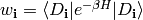
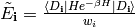

RHOPIIex¶
RHOPIIex is produced if a diagonalization is performed. The data is calculated by CalcRhoPII. It contains:
Determinant=Di w_i P ln rho_ii ln s_i E~_i Degeneracy
where:
Determinant is formed by the list of spin-obitals enclosed in parentheses.
w_i is the calcuated value of .
P ln rho_ii is formed by P, the path length, and rho_ii is
calculaed to the approximation specified by the input parameters.
s_i is defined from
.
E~_i is the value of .
Degeneracy is the number of symmetry related determinants which are not explicitly calculated.